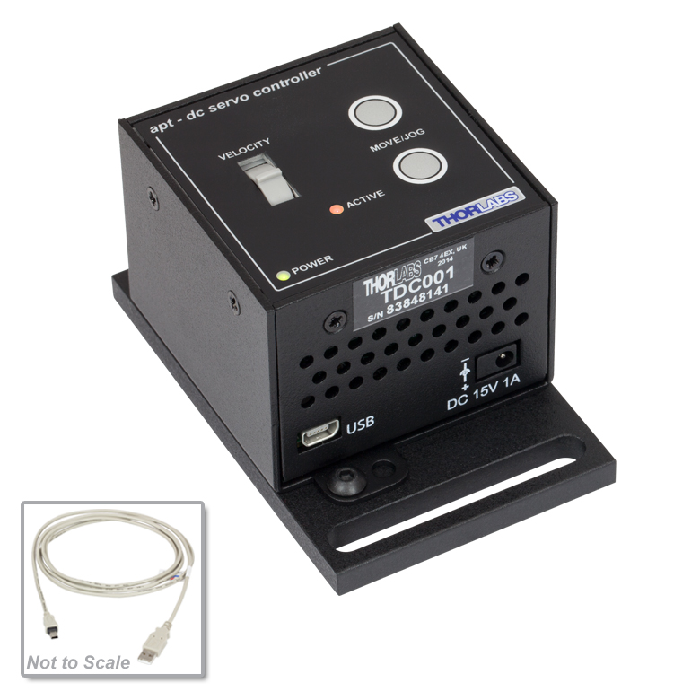
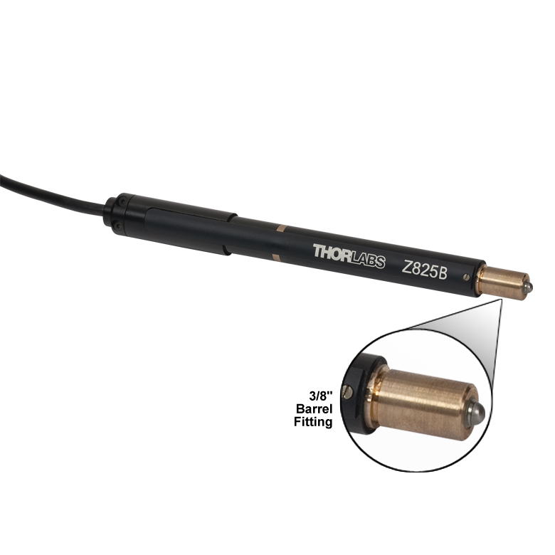

TDC001

Controller Description
The TDC001 is a compact single-channel T-Cube controller from Thorlabs designed for precise control of DC servo motors. It is commonly used for positioning applications requiring fine adjustments. The TDC001 supports bidirectional motor control, with adjustable speed and position settings, and is compatible with Thorlabs’ DC servo actuators. It features USB connectivity for computer control via Thorlabs’ Kinesis Software or QuantumION's Thorlabs Cube Repository
Controller Use-Cases
- TDC001 is used in applications requiring precise motion control, such as:
- Optical Alignment: Positioning lenses, mirrors, or other optical components in labs and industrial setups.
- Microscopy: Fine-tuning stages or focus mechanisms.
- Laser Systems: Aligning and stabilizing beams in optical experiments.
Peripherals Examples
- DC Servo Actuators 
- Motorized Mirror Mounts

- Motorized Stages

API Reference
Bases: _Cube
TDC001 T-Cube Motor Controller class
Source code in venv/lib/python3.9/site-packages/thorlabs_cube/driver/tcube/tdc.py
7 8 9 10 11 12 13 14 15 16 17 18 19 20 21 22 23 24 25 26 27 28 29 30 31 32 33 34 35 36 37 38 39 40 41 42 43 44 45 46 47 48 49 50 51 52 53 54 55 56 57 58 59 60 61 62 63 64 65 66 67 68 69 70 71 72 73 74 75 76 77 78 79 80 81 82 83 84 85 86 87 88 89 90 91 92 93 94 95 96 97 98 99 100 101 102 103 104 105 106 107 108 109 110 111 112 113 114 115 116 117 118 119 120 121 122 123 124 125 126 127 128 129 130 131 132 133 134 135 136 137 138 139 140 141 142 143 144 145 146 147 148 149 150 151 152 153 154 155 156 157 158 159 160 161 162 163 164 165 166 167 168 169 170 171 172 173 174 175 176 177 178 179 180 181 182 183 184 185 186 187 188 189 190 191 192 193 194 195 196 197 198 199 200 201 202 203 204 205 206 207 208 209 210 211 212 213 214 215 216 217 218 219 220 221 222 223 224 225 226 227 228 229 230 231 232 233 234 235 236 237 238 239 240 241 242 243 244 245 246 247 248 249 250 251 252 253 254 255 256 257 258 259 260 261 262 263 264 265 266 267 268 269 270 271 272 273 274 275 276 277 278 279 280 281 282 283 284 285 286 287 288 289 290 291 292 293 294 295 296 297 298 299 300 301 302 303 304 305 306 307 308 309 310 311 312 313 314 315 316 317 318 319 320 321 322 323 324 325 326 327 328 329 330 331 332 333 334 335 336 337 338 339 340 341 342 343 344 345 346 347 348 349 350 351 352 353 354 355 356 357 358 359 360 361 362 363 364 365 366 367 368 369 370 371 372 373 374 375 376 377 378 379 380 381 382 383 384 385 386 387 388 389 390 391 392 393 394 395 396 397 398 399 400 401 402 403 404 405 406 407 408 409 410 411 412 413 414 415 416 417 418 419 420 421 422 423 424 425 426 427 428 429 430 431 432 433 434 435 436 437 438 439 440 441 442 443 444 445 446 447 448 449 450 451 452 453 454 455 456 457 458 459 460 461 462 463 464 465 466 467 468 469 470 471 472 473 474 475 476 477 478 479 480 481 482 483 484 485 486 487 488 489 490 491 492 493 494 495 496 497 498 499 500 501 502 503 504 505 506 507 508 509 510 511 512 513 514 515 516 517 518 519 520 521 522 523 524 525 526 527 528 529 530 531 532 533 534 535 536 537 538 539 540 541 542 543 544 545 546 547 548 549 550 551 552 553 554 555 556 557 558 559 560 561 562 563 564 565 566 567 568 569 570 571 572 573 574 575 576 577 578 579 580 581 582 583 584 585 586 587 588 589 590 591 592 593 594 595 596 597 598 599 600 601 602 603 604 605 606 607 608 609 610 611 612 613 614 615 616 617 618 619 620 621 622 623 624 625 626 627 628 629 630 631 632 633 | |
get_av_modes()
async
Get the LED indicator mode bits.
:return: The LED indicator mode bits. :rtype: int
Source code in venv/lib/python3.9/site-packages/thorlabs_cube/driver/tcube/tdc.py
528 529 530 531 532 533 534 535 536 537 538 539 | |
get_button_parameters()
async
Get button parameters.
:return: A 3 int tuple containing in this order: button mode,
position1 and position2. Cf. :py:meth:set_button_parameters()
<Tdc.set_button_parameters>
for description.
:rtype: A 3 int tuple
Source code in venv/lib/python3.9/site-packages/thorlabs_cube/driver/tcube/tdc.py
563 564 565 566 567 568 569 570 571 572 573 574 575 | |
get_dc_pid_parameters()
async
Get the position control loop parameters.
:return: A 5 int tuple containing in this order:
proportional gain, integral gain, differential gain, integral limit
and filter control. Cf. :py:meth:set_dc_pid_parameters()
<Tdc.set_dc_pid_parameters>
for precise description.
:rtype: A 5 int tuple.
Source code in venv/lib/python3.9/site-packages/thorlabs_cube/driver/tcube/tdc.py
498 499 500 501 502 503 504 505 506 507 508 509 510 511 | |
get_dc_status_update()
async
Request a status update from the motor.
This can be used instead of enabling regular updates.
:return: A 3 int tuple containing in this order: position, velocity, status bits. :rtype: A 3 int tuple
Source code in venv/lib/python3.9/site-packages/thorlabs_cube/driver/tcube/tdc.py
586 587 588 589 590 591 592 593 594 595 596 597 598 599 | |
get_encoder_counter()
async
Get encoder count from the controller.
:return: The value of the encoder counter. :rtype: int
Source code in venv/lib/python3.9/site-packages/thorlabs_cube/driver/tcube/tdc.py
128 129 130 131 132 133 134 135 136 137 | |
get_gen_move_parameters()
async
Get the backlash distance.
:return: The value of the backlash distance. :rtype: int
Source code in venv/lib/python3.9/site-packages/thorlabs_cube/driver/tcube/tdc.py
208 209 210 211 212 213 214 215 216 217 | |
get_home_parameters()
async
Get the homing velocity parameter.
:return: The homing velocity. :rtype: int
Source code in venv/lib/python3.9/site-packages/thorlabs_cube/driver/tcube/tdc.py
269 270 271 272 273 274 275 276 277 278 | |
get_jog_parameters()
async
Get the velocity jog parameters.
:return: A 5 int tuple containing in this order: jog_mode, step_size, acceleration, max_velocity, stop_mode :rtype: A 5 int tuple.
Source code in venv/lib/python3.9/site-packages/thorlabs_cube/driver/tcube/tdc.py
184 185 186 187 188 189 190 191 192 193 194 195 196 197 | |
get_limit_switch_parameters()
async
Get the limit switch parameters.
:return: A 5 int tuple containing the following in order: cw_hw_limit,
ccw_hw_limit, cw_sw_limit, ccw_sw_limit, sw_limit_mode. Cf.
description in
:py:meth:set_limit_switch_parameters()
<Tdc.set_limit_switch_parameters>
method.
:rtype: A 5 int tuple.
Source code in venv/lib/python3.9/site-packages/thorlabs_cube/driver/tcube/tdc.py
350 351 352 353 354 355 356 357 358 359 360 361 362 363 364 | |
get_move_absolute_parameters()
async
Get the absolute position move parameter.
:return: The absolute position to move. :rtype: int
Source code in venv/lib/python3.9/site-packages/thorlabs_cube/driver/tcube/tdc.py
250 251 252 253 254 255 256 257 258 259 | |
get_move_relative_parameters()
async
Get the relative distance move parameter.
:return: The relative distance move parameter. :rtype: int
Source code in venv/lib/python3.9/site-packages/thorlabs_cube/driver/tcube/tdc.py
229 230 231 232 233 234 235 236 237 238 | |
get_position_counter()
async
Get the "live" position count from the controller.
:return: The value of the position counter. :rtype: int
Source code in venv/lib/python3.9/site-packages/thorlabs_cube/driver/tcube/tdc.py
105 106 107 108 109 110 111 112 113 114 | |
get_pot_parameters()
async
Get pot parameters.
:return: An 8 int tuple containing the following values: zero_wnd,
vel1, wnd1, vel2, wnd2, vel3, wnd3, vel4. See
:py:meth:set_pot_parameters()<Tdc.set_pot_parameters> for a
description of each tuple element meaning.
:rtype: An 8 int tuple
Source code in venv/lib/python3.9/site-packages/thorlabs_cube/driver/tcube/tdc.py
72 73 74 75 76 77 78 79 80 81 82 83 84 | |
get_status_bits()
async
Request a cut down version of the status update with status bits.
:return: The motor status. :rtype:
Source code in venv/lib/python3.9/site-packages/thorlabs_cube/driver/tcube/tdc.py
601 602 603 604 605 606 607 608 609 610 | |
get_velocity_parameters()
async
Get the trapezoidal velocity parameters.
:return: A 2 int tuple: (acceleration, max_velocity). :rtype: A 2 int tuple (int, int)
Source code in venv/lib/python3.9/site-packages/thorlabs_cube/driver/tcube/tdc.py
148 149 150 151 152 153 154 155 156 157 | |
move_absolute(absolute_distance)
async
Start an absolute move.
:param absolute_distance: The distance to move. This is a signed integer that specifies the absolute distance in position encoder counts.
Source code in venv/lib/python3.9/site-packages/thorlabs_cube/driver/tcube/tdc.py
407 408 409 410 411 412 413 414 415 416 417 418 419 | |
move_absolute_memory()
async
Start an absolute move of distance in the controller's memory.
The absolute move position parameter used for the move will be the
parameter sent previously by a :py:meth:set_move_absolute_parameters()
<Tdc.set_move_absolute_parameters>
command.
Source code in venv/lib/python3.9/site-packages/thorlabs_cube/driver/tcube/tdc.py
393 394 395 396 397 398 399 400 401 402 403 404 405 | |
move_home()
async
Start a home move sequence.
This call is blocking until device is homed or move is stopped.
Source code in venv/lib/python3.9/site-packages/thorlabs_cube/driver/tcube/tdc.py
280 281 282 283 284 285 286 287 288 289 | |
move_jog(direction)
async
Start a jog move.
:param direction: The direction to jog. 1 is forward, 2 is backward.
Source code in venv/lib/python3.9/site-packages/thorlabs_cube/driver/tcube/tdc.py
421 422 423 424 425 426 427 428 429 430 431 | |
move_relative(relative_distance)
async
Start a relative move
:param relative_distance: The distance to move in position encoder counts.
Source code in venv/lib/python3.9/site-packages/thorlabs_cube/driver/tcube/tdc.py
380 381 382 383 384 385 386 387 388 389 390 391 | |
move_relative_memory()
async
Start a relative move of distance in the controller's memory
The relative distance parameter used for the move will be the parameter
sent previously by a :py:meth:set_move_relative_parameters()
<Tdc.set_move_relative_parameters>
command.
Source code in venv/lib/python3.9/site-packages/thorlabs_cube/driver/tcube/tdc.py
366 367 368 369 370 371 372 373 374 375 376 377 378 | |
move_stop(stop_mode)
async
Stop any type of motor move.
Stops any of those motor move: relative, absolute, homing or move at velocity.
:param stop_mode: The stop mode defines either an immediate (abrupt) or profiled stop. Set this byte to 1 to stop immediately, or to 2 to stop in a controlled (profiled) manner.
Source code in venv/lib/python3.9/site-packages/thorlabs_cube/driver/tcube/tdc.py
448 449 450 451 452 453 454 455 456 457 458 459 460 461 462 463 464 | |
move_velocity(direction)
async
Start a move.
When this method is called, the motor will move continuously in the
specified direction using the velocity parameter set by the
:py:meth:set_move_relative_parameters()
<Tdc.set_move_relative_parameters>
command until a :py:meth:move_stop()<Tdc.move_stop> command (either
StopImmediate or StopProfiled) is called, or a limit switch is reached.
:param direction: The direction to jog: 1 to move forward, 2 to move backward.
Source code in venv/lib/python3.9/site-packages/thorlabs_cube/driver/tcube/tdc.py
433 434 435 436 437 438 439 440 441 442 443 444 445 446 | |
resume_end_of_move_messages()
async
Resume all unsolicited "end of move" messages and error messages returned by the controller.
i.e., MGMSG.MOT_MOVE_STOPPED, MGMSG.MOT_MOVE_COMPLETED, MGMSG.MOT_MOVE_HOMED
The command also disables the error messages that the controller sends when an error condition is detected: MGMSG.HW_RESPONSE, MGMSG.HW_RICHRESPONSE
Source code in venv/lib/python3.9/site-packages/thorlabs_cube/driver/tcube/tdc.py
621 622 623 624 625 626 627 628 629 630 631 632 633 | |
set_av_modes(mode_bits)
async
Set the LED indicator modes.
The LED on the control keyboard can be configured to indicate certain driver states.
:param mode_bits: Set the bit 0 will make the LED flash when the 'Ident' message is sent. Set the bit 1 will make the LED flash when the motor reaches a forward or reverse limit switch. Set the bit 3 (value 8) will make the LED lit when motor is moving.
Source code in venv/lib/python3.9/site-packages/thorlabs_cube/driver/tcube/tdc.py
513 514 515 516 517 518 519 520 521 522 523 524 525 526 | |
set_button_parameters(mode, position1, position2)
async
Set button parameters.
The control keypad can be used either to jog the motor, or to perform moves to absolute positions. This function is used to set the front panel button functionality.
:param mode: If set to 1, the buttons are used to jog the motor. Once
set to this mode, the move parameters for the buttons are taken
from the arguments of the :py:meth:set_jog_parameters()
<Tdc.set_jog_parameters>
method. If set to 2, each button can be programmed with a
differente position value such that the controller will move the
motor to that position when the specific button is pressed.
:param position1: The position (in encoder counts) to which the motor
will move when the top button is pressed.
:param position2: The position (in encoder counts) to which the motor
will move when the bottom button is pressed.
Source code in venv/lib/python3.9/site-packages/thorlabs_cube/driver/tcube/tdc.py
541 542 543 544 545 546 547 548 549 550 551 552 553 554 555 556 557 558 559 560 561 | |
set_dc_pid_parameters(proportional, integral, differential, integral_limit, filter_control=15)
async
Set the position control loop parameters.
:param proportional: The proportional gain, values in range [0; 32767]. :param integral: The integral gain, values in range [0; 32767]. :param differential: The differential gain, values in range [0; 32767]. :param integral_limit: The integral limit parameter is used to cap the value of the integrator to prevent runaway of the integral sum at the output. Values are in range [0; 32767]. If set to 0, then integration term in the PID loop is ignored. :param filter_control: Identifies which of the above are applied by setting the corresponding bit to 1. By default, all parameters are applied, and this parameter is set to 0x0F (1111).
Source code in venv/lib/python3.9/site-packages/thorlabs_cube/driver/tcube/tdc.py
466 467 468 469 470 471 472 473 474 475 476 477 478 479 480 481 482 483 484 485 486 487 488 489 490 491 492 493 494 495 496 | |
set_eeprom_parameters(msg_id)
async
Save the parameter settings for the specified message.
:param msg_id: The message ID of the message containing the parameters to be saved.
Source code in venv/lib/python3.9/site-packages/thorlabs_cube/driver/tcube/tdc.py
577 578 579 580 581 582 583 584 | |
set_encoder_counter(encoder_count)
async
Set encoder count in the controller.
This is only applicable to stages and actuators fitted with an encoder. In general this command is not normally used. Instead the device is homed at power-up.
:param encoder_count: The new value of the encoder counter.
Source code in venv/lib/python3.9/site-packages/thorlabs_cube/driver/tcube/tdc.py
116 117 118 119 120 121 122 123 124 125 126 | |
set_gen_move_parameters(backlash_distance)
async
Set the backlash distance.
:param backlash_distance: The value of the backlash distance, which specifies the relative distance in position counts.
Source code in venv/lib/python3.9/site-packages/thorlabs_cube/driver/tcube/tdc.py
199 200 201 202 203 204 205 206 | |
set_home_parameters(home_velocity)
async
Set the homing velocity parameter.
:param home_velocity: Homing velocity.
Source code in venv/lib/python3.9/site-packages/thorlabs_cube/driver/tcube/tdc.py
261 262 263 264 265 266 267 | |
set_jog_parameters(mode, step_size, acceleration, max_velocity, stop_mode)
async
Set the velocity jog parameters.
:param mode: 1 for continuous jogging, 2 for single step jogging. :param step_size: The jog step size in encoder counts. :param acceleration: The acceleration in encoder counts/sec/sec. :param max_velocity: The maximum (final) velocity in encoder counts/sec. :param stop_mode: 1 for immediate (abrupt) stop, 2 for profiled stop (with controlled deceleration).
Source code in venv/lib/python3.9/site-packages/thorlabs_cube/driver/tcube/tdc.py
159 160 161 162 163 164 165 166 167 168 169 170 171 172 173 174 175 176 177 178 179 180 181 182 | |
set_limit_switch_parameters(cw_hw_limit, ccw_hw_limit, cw_sw_limit=0, ccw_sw_limit=0, sw_limit_mode=1)
async
Set the limit switch parameters.
:param cw_hw_limit: The operation of clockwise hardware limit switch when contact is made.
0x01 Ignore switch or switch not present.
0x02 Switch makes on contact.
0x03 Switch breaks on contact.
0x04 Switch makes on contact - only used for homes (e.g. limit
switched rotation stages).
0x05 Switch breaks on contact - only used for homes (e.g. limit
switched rotations stages).
0x06 For PMD based brushless servo controllers only - uses index
mark for homing.
Note. Set upper bit to swap CW and CCW limit switches in code. Both
CWHardLimit and CCWHardLimit structure members will have the upper
bit set when limit switches have been physically swapped.
:param ccw_hw_limit: The operation of counter clockwise hardware limit switch when contact is made. :param cw_sw_limit: Clockwise software limit in position steps, as a 32 bit unsigned long. (Not applicable to TDC001 units) :param ccw_sw_limit: Counter clockwise software limit in position steps (scaling as for CW limit). (Not applicable to TDC001 units) :param sw_limit_mode: Software limit switch mode
0x01 Ignore Limit
0x02 Stop Immediate at Limit
0x03 Profiled Stop at limit
0x80 Rotation Stage Limit (bitwise OR'd with one of the settings
above) (Not applicable to TDC001 units)
Source code in venv/lib/python3.9/site-packages/thorlabs_cube/driver/tcube/tdc.py
291 292 293 294 295 296 297 298 299 300 301 302 303 304 305 306 307 308 309 310 311 312 313 314 315 316 317 318 319 320 321 322 323 324 325 326 327 328 329 330 331 332 333 334 335 336 337 338 339 340 341 342 343 344 345 346 347 348 | |
set_move_absolute_parameters(absolute_position)
async
Set the following absolute move parameter: absolute_position.
:param absolute_position: The absolute position to move. This is a signed integer that specifies the absolute move position in encoder counts.
Source code in venv/lib/python3.9/site-packages/thorlabs_cube/driver/tcube/tdc.py
240 241 242 243 244 245 246 247 248 | |
set_move_relative_parameters(relative_distance)
async
Set the following relative move parameter: relative_distance.
:param relative_distance: The distance to move. This is a signed integer that specifies the relative distance in position encoder counts.
Source code in venv/lib/python3.9/site-packages/thorlabs_cube/driver/tcube/tdc.py
219 220 221 222 223 224 225 226 227 | |
set_position_counter(position)
async
Set the "live" position count in the controller.
In general, this command is not normally used. Instead, the stage is homed immediately after power-up; and after the homing process is completed, the position counter is automatically updated to show the actual position.
:param position: The new value of the position counter.
Source code in venv/lib/python3.9/site-packages/thorlabs_cube/driver/tcube/tdc.py
92 93 94 95 96 97 98 99 100 101 102 103 | |
set_pot_parameters(zero_wnd, vel1, wnd1, vel2, wnd2, vel3, wnd3, vel4)
async
Set pot parameters.
:param zero_wnd: The deflection from the mid position (in ADC counts 0 to 127) before motion can start. :param vel1: The velocity to move when between zero_wnd and wnd1. :param wnd1: The deflection from the mid position (in ADC counts zero_wnd to 127) to apply vel1. :param vel2: The velocity to move when between wnd1 and wnd2. :param wnd2: The deflection from the mid position (in ADC counts wnd1 to 127) to apply vel2. :param vel3: The velocity to move when between wnd2 and wnd3. :param wnd3: The deflection from the mid position (in ADC counts wnd2 to 127) to apply vel3. :param vel4: The velocity to move when beyond wnd3.
Source code in venv/lib/python3.9/site-packages/thorlabs_cube/driver/tcube/tdc.py
49 50 51 52 53 54 55 56 57 58 59 60 61 62 63 64 65 66 67 68 69 70 | |
set_velocity_parameters(acceleration, max_velocity)
async
Set the trapezoidal velocity parameter.
:param acceleration: The acceleration in encoder counts/sec/sec. :param max_velocity: The maximum (final) velocity in counts/sec.
Source code in venv/lib/python3.9/site-packages/thorlabs_cube/driver/tcube/tdc.py
139 140 141 142 143 144 145 146 | |
suspend_end_of_move_messages()
async
Disable all unsolicited "end of move" messages and error messages returned by the controller.
i.e., MGMSG.MOT_MOVE_STOPPED, MGMSG.MOT_MOVE_COMPLETED, MGMSGS_MOT_MOVE_HOMED
Source code in venv/lib/python3.9/site-packages/thorlabs_cube/driver/tcube/tdc.py
612 613 614 615 616 617 618 619 | |